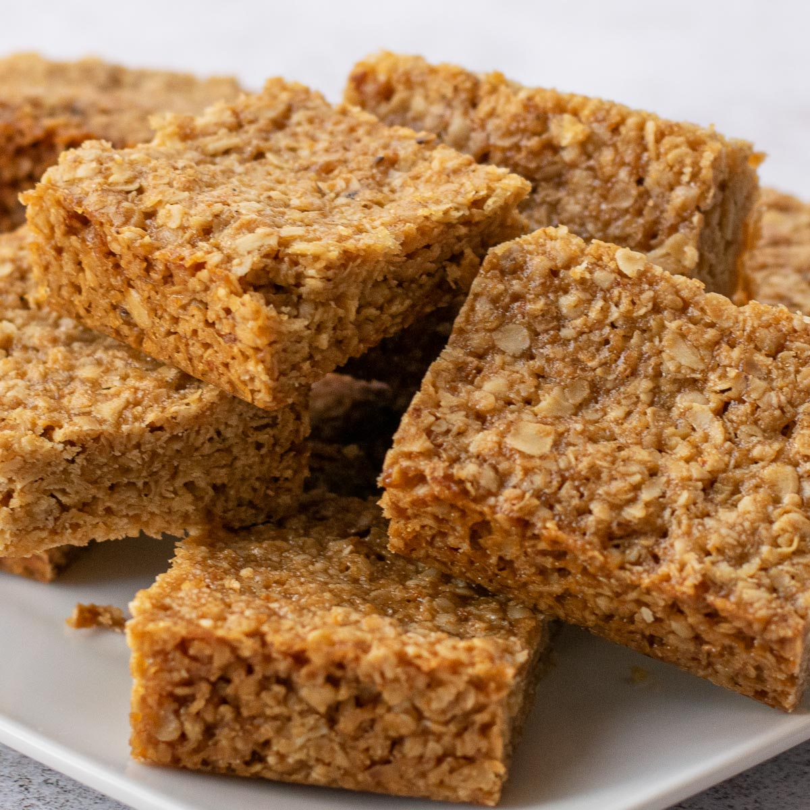

Flapjack Recipe

If followed closely, here is how your Flapjacks will look
Ingredients
- Butter
- Soft Brown Sugar
- Golden Syrup
- Rolled Oats
- Salt
- Ginger
Steps
- Preheat the oven to 200°C/ 180°C fan/ gas mark 6/ 400°F
- Grease the baking tin and line the bottom with a square of baking parchment
- Weigh the butter, sugar and syrup into a large saucepan. Heat the mixture on a low heat, stirring often, until the butter is melted
165 g butter,2 tablespoons golden syrup,125 g soft brown sugar
- Remove from the heat and stir in the oats, salt and ginger
250 g rolled porridge oats,,1 pinch salt,1 pinch ginger
- Turn the mixture into the prepared baking tray. Spread evenly and firm down with the back of a spoon
- Cook for about 20 minutes until a light golden colour for a soft flapjack. Give it a bit longer if you prefer your flapjack slightly crisper
- Run a palette knife around the edge of the tin then, after 5 minutes, mark the flapjack into bars or squares.
- Leave in the tin until almost cold, then cut into pieces.